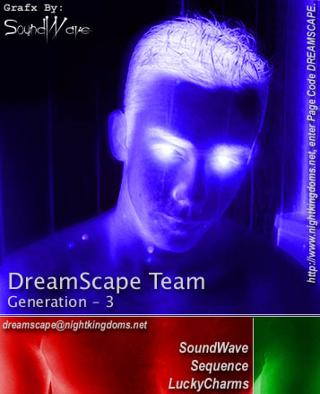
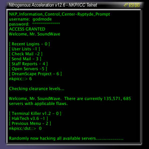

|

[ Shouts ] Shouts to all the members of the WebSite Alliance (NKWA); unixfu-; sirrus; Serenity Sleeps, CrimsonGolem, HyperViper (a.k.a. "Tyler"); Silicon Toad (a.k.a. "Jason"); Attrition.org (for putting up our hacks so quickly); CyberArmy.com (for giving us more exposure by mirroring Attrition's hack list); to all the sysadmins who have understood over the years what hacking is and asked us how to fix their servers properly, and for understanding that we're not here to destroy, but to help get the point across and further security as a whole; to all our friends who have followed us for the past 7 or so years and wished us luck in all possible ways; to all those that are just learning and have befriended someone who is willing to teach them; to all of our equals around the world who contribute to the same cause and with great effort, we're all the same -- we learn to help others; to The Mentor for inspiring all of us, at some point, to strengthen our convictions and spirits regarding computer security and education; and, of course, to all of our moms around the world who looked the other way while we were all doing this as teenagers. ;O)
[ To The SysAdmin... ] If you are willing to learn, we are also willing to teach (apparently you either never Emailed us or ignored the first defacement completely -- well, we're back!). Email us with your questions and we will tell you what to do. Some technologies we use are not patchable, but many are. We are willing to run various security checks on your server for free and send you a copy of your network report from the various programs we made used during this hack (if available). No need to tell us any information to prove it's you, we know your Email address. The original index.html file has been renamed to old_index.html. |
That's Right... YOU've Been Hacked... TWICE! You have been hacked (yet again) by the infamous hack team, DreamScape. This is definitely not the first time we've hacked, nor the last. To introduce ourselves, we're a hacking group that's been around a long time, even before Attrition was commissioned and even before they became known for mirroring hacked WebSites. Just recently, the old Generation 3 crew got together and decided it was time to start defacing pages again. Yes, there is a reason for Generation 3 instead of something else. "Generation 3" means that this is the third group of hackers put together for the DreamScape Team, and also the smallest of all generations (17 was the most). I would also like to notify everybody that this Team is no longer commissioned by NightKingdoms Progressive as a hacking team and is not responsible for any actions or behaviors that we may endeavor. It's just that the DreamScape Team is deeply rooted with the history of NightKingdoms Progressive and we all know the history of this group. We do this for fun as well as show just how vulnerable server security is in our spare time. SoundWave
- Sequence
- LuckyCharms
-
Email
Us! - |
|

Nitrogenous Acceleration v12.6 (ScreenShot). |
|
|
This
has been a de-production of DreamScape Team, Generation - 3. |
|